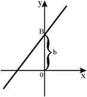
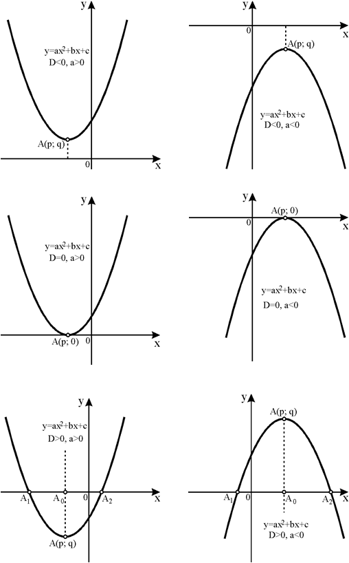
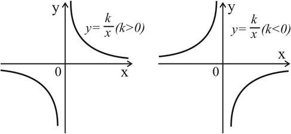

График линейной функции представляет из себя прямую и в общем случае выглядит следующим образом (приведен пример для случая когда k > 0, в этом случае функция возрастающая; для случая k < 0 функция будет убывающей, т.е. прямая будет наклонена в другую сторону - слева направо)

Квадратичная функция, как и любая другая функция, пересекает ось ОХ в точках являющихся её корнями: (x1; 0) и (x2; 0). Если корней нет, значит квадратичная функция ось ОХ не пересекает, если корень один, значит в этой точке (x0; 0) квадратичная функция только касается оси ОХ, но не пересекает её. Квадратичная функция всегда пересекает ось OY в точке с координатами: (0; c). График квадратичной функции (парабола) может выглядеть следующим образом (на рисунке примеры, которые далеко не исчерпывают все возможные виды парабол):
Икс вершины вычисляется по формуле:


В зависимости от знака числа k график обратно пропорциональной зависимости может иметь два принципиальных варианта:
Асимптота - это линия, к которой линия графика функции бесконечно близко приближается, но не пересекает. Асимптотами для графиков обратной пропорциональности приведенных на рисунке выше являются оси координат, к которым график функции бесконечно близко приближается, но не пересекает их.
Стационарные точки — точки, в которых производная функции f(x) равна нулю.
Критические точки — точки, в которых производная функции f(x) равна нулю либо не существует. Стационарные точки являются подмножеством множества критических точек.
Экстремум в математике — максимальное или минимальное значение функции на заданном множестве. Точка, в которой достигается экстремум, называется точкой экстремума. Соответственно, если достигается минимум — точка экстремума называется точкой минимума, а если максимум — точкой максимума.
Нули функции — это значения аргумента, при которых значение функции равно нулю.
Асимптота — прямая, которая обладает таким свойством, что расстояние от точки графика функции до этой прямой стремится к нулю при неограниченном удалении точки графика от начала координат. По способам их отыскания выделяют три вида асимптот: вертикальные, горизонтальные, наклонные.
Если функция f(x) не является непрерывной в точке x = a, то говорят, что f(x) имеет разрыв в этой точке.

Найти область определения функции.
Найти область допустимых значений функции.
Проверить не является ли функция четной или нечетной.
Проверить не является ли функция периодической.
Найти точку пересечения с осью OY (если она есть).
Вычислить производную и найти критические точки, определить промежутки возрастания и убывания.
Промежутки знакопостоянства.
Асимптоты.
На основании проведенного исследования построить график функции.
Метод интервалов — специальный алгоритм решения для сложных неравенств вида f(x) > 0. При этом знак неравенства может быть любым.
Интервал — это промежуток на числовой прямой, ограниченный двумя различными числами.
Алгоритм решения неравенств методом интервалов:
1 шаг. Перенести все части неравенства в одну сторону так, чтобы с другой остался только 0.
2 шаг. Найти нули функции, для этого необходимо решить уравнение f(x) = 0.
3 шаг. Начертить числовую прямую и отметить на ней все полученные корни. Таким образом, числовая прямая разобьется на интервалы.
4 шаг. Определить знаки на каждом интервале. Для этого необходимо подставить любое удобное значение в f(x) и определить, какой знак будет иметь функция на данном интервале.
Расставляя полученные корни на прямой, необходимо отмечать их точками. При этом от того, какая отмечена точка (выколотая или закрашенная), будет зависеть ответ.
Если в неравенстве стоит строгий знак неравенства, то все точки на прямой должны быть выколотыми.
Таким образом, граничные точки не будут включены в итоговый промежуток. Для записи таких точек используют круглые скобочки. Например, в промежуток (2;3) включаются все значения от 2 до 3, но не включаются граничные точки.
Если в неравенстве стоит нестрогий знак неравенства, то найденные корни должны быть отмечены закрашенными точками.
Это означает, что мы включаем их в итоговый промежуток. Для записи таких точек используют квадратные скобочки. Например, в промежуток [2;3] включаются все значения от 2 до 3, в том числе и граничные точки.
Если в неравенстве появляются ограничения и некоторые точки нельзя взять в ответ, то такие точки должны быть выколотыми на числовой прямой, при этом знак самого неравенства может быть как строгим, так и нестрогим.
Например, если необходимо решить неравенство с дробью, то нули знаменателя на числовой прямой обязательно должны быть обозначены выколотыми точками.
Линейные неравенства – неравенства, в которых неизвестное стоит только в первой степени.
Алгоритм решения линейных неравенств:
1 шаг: В правую часть из левой перенести все свободные члены со сменой знака, то есть обычные числа. В левой части должны остаться только слагаемые с x.
2 шаг: Разделить число в правой части на коэффициент при x в левой. Если коэффициент при x меньше нуля, меняем знак неравенства на противоположный.
3 шаг: В ответ записать получившийся промежуток. Если знак нестрогий ( или ) значение, стоящее в правой части, включаем в ответ с помощью квадратной скобки, если же знак строгий (< или >) значение, стоящее в правой части, не включаем в ответ с помощью круглой скобки.
Алгоритм решения квадратных неравенств:
1 шаг: Решить левую часть как уравнение, то есть найти корни квадратного выражения, стоящего в левой части.
2 шаг: Нанести на координатную прямую, получившиеся корни. Если знак строгий, то числа на координатной оси будут выколотыми (пустыми), если знак нестрогий ,тогда числа будут закрашенными.
3 шаг: Посчитать знаки на промежутках с помощью метода интервалов.
4 шаг: В ответ записать те промежутки, знак в которых совпадает со знаком неравенства. Закрашенные значения включаются в ответ с помощью квадратной скобки, пустые – не входят в ответ, скобка круглая.
Дробно-рациональное неравенство – неравенство, в котором есть операции деления на выражение, содержащее переменную.
Алгоритм решения дробно-рациональных неравенств:
1 шаг: Решить как уравнение отдельно числитель и знаменатель левой части.
2 шаг: Нанести на координатную прямую, получившиеся корни. Если знак строгий, то корни числителя на координатной оси будут выколотыми (пустыми), если знак нестрогий, тогда числа будут закрашенными. Корни знаменателя всегда выколотые, так мы показываем, что знаменатель всегда не равен нулю.
3 шаг: Посчитать знаки на промежутках с помощью метода интервалов.
4 шаг: В ответ записать те промежутки, знак в которых совпадает со знаком неравенства. Закрашенные значения включаются в ответ с помощью квадратной скобки, пустые – не входят в ответ, скобка круглая.
Иррациональные неравенства – неравенства, содержащие переменную под знаком радикала (корня) или под знаком возведения в дробную степень.
Алгоритм решения иррациональных неравенств:
1 шаг: Составить систему неравенств, где первое неравенство – область допустимых значений подкоренного выражения ( подкоренное выражение не отрицательное), а второе неравенство – исходное выражение.
2 шаг: Решить каждое неравенство отдельно. В случае решения иррационального неравенства мы должны обе части возвести в квадрат и затем решить получившееся линейное или квадратное неравенство.
3 шаг: Найти пересечения решений первого и второго неравенства. Записать этот промежуток пересечения в ответ.
Система неравенств – несколько неравенств, для которых требуется найти множество всех решений, являющихся одновременно решениями каждого неравенства системы.
Алгоритм решения систем неравенств:
1 шаг: Решить отдельно каждое неравенство системы.
2 шаг: На координатной прямой обозначить промежутки – решение каждого неравенства.
3 шаг: Найти пересечение закрашенный областей всех координатных прямых, это пересечение и есть решение системы.
Синус — это отношение противолежащего катета к гипотенузе
Косинус — это отношение прилежащего катета к гипотенузе
Тангенс — это отношение противолежащего катета к прилежащему катету
Котангенс — это отношение прилежащего катета к противолежащему катету